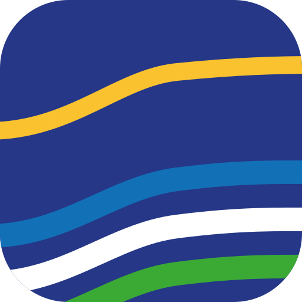

Nivel A · Institucional Decretos, certificados, oficios, credenciales, cuenta pública.
Decretos, certificados, oficios, credenciales, cuenta pública.
Ilustre Municipalidad de
Hualañé
Nivel B · Ciudadano Servicios, campañas, programas, eventos, redes.
Servicios, campañas, programas, eventos, redes.
Nivel C · DigitalFavicon, avatar, app, WhatsApp.
